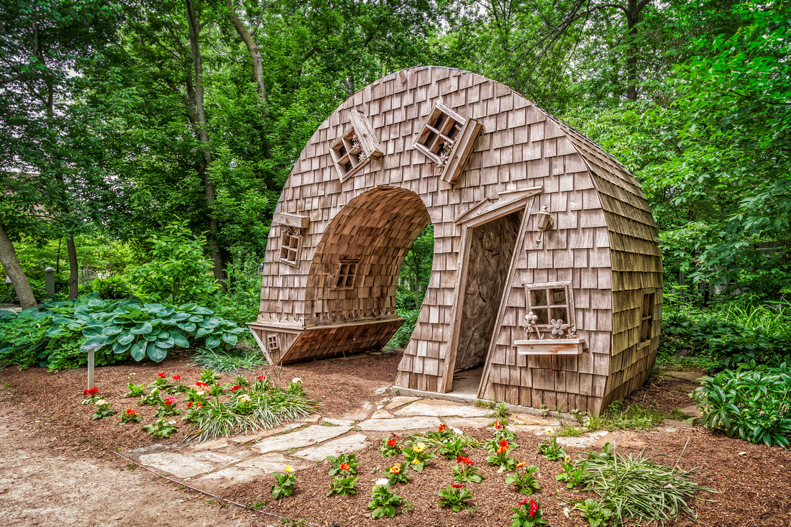

<!DOCTYPE html>
<html>
  <head>
    <meta charset="utf-8">
    <meta name="viewport" content="initial-scale=1, maximum-scale=1, user-scalable=no, width=device-width">
    <title>Y&amp;L</title>

    <link href="css/style.css" rel="stylesheet">
    <link href="lib/ionic/css/ionic.css" rel="stylesheet">
    

    <!-- IF using Sass (run gulp sass first), then uncomment below and remove the CSS includes above
    <link href="css/ionic.app.css" rel="stylesheet">
    -->

    <!-- ionic/angularjs js -->
    <script src="lib/ionic/js/ionic.bundle.js"></script>

    <!-- cordova script (this will be a 404 during development) -->
    <script src="cordova.js"></script>

    <!-- your app's js -->
    <script src="js/app.js"></script>
  </head>
  <body ng-app="starter">
      <ion-nav-bar class="bar bar-header bar-energized">
        <ion-nav-back-button></ion-nav-back-button>
      </ion-nav-bar>

      <ion-nav-view>
      </ion-nav-view>


      <script id="templates/page1.html" type="text/ng-template">
        <ion-view view-title="{{myTitle}}">
          <ion-content class="headerpadding">
<!--             <h1 class="title"> Home</h1> -->
            <div class="item item-image">
              
            </div>
            <p class="padding description"> Welcome to Young &amp; Laramore. Although we aren't a true museum, we have a few exhibits that may interest you.</p>
            <div class="list">
              <a ui-sref="page2" class="item item-thumbnail-left">
                
                <h2 class="title"> Rocket Exhibit </h2>
                <p class="label">The rocket is a jungle gym...</p>
              </a>
              <a ui-sref="page3" class="item item-thumbnail-left">
                
                <h2 class="title"> Curtain Exhibit </h2>
                <p class="label">The stage inspired the company...</p>
              </a>
              <a ui-sref="page4" class="item item-thumbnail-left">
                
                <h2 class="title"> Visit Indy Exhibits </h2>
                <p class="label">Engage, enlighten, and enhance through art...</p>
              </a>
            </div>
<!--             <pre>
              {{debugLog}}
            </pre> -->
<!--             <button ui-sref="page2" class="button button-block">Rocket</button> -->
          </ion-content>
        </ion-view>
      </script>

      <script id="templates/page2.html" type="text/ng-template">
        <ion-view view-title="Rocket">
          <ion-content class="padding">
            <!-- <h1 class="title"> Rocket </h1> -->
            <div class="list card">
              <div class="item item-avatar">
                
                <h2 class="title"> Young &amp; Laramore "The Rocket"</h2>
                <p class="created"> David Jemerson Young, 2006 </p>
              </div>
              <div class="item item-body">
                
                <p class="info">The Rocket is a jungle gym--the gathering point of our playground. It also represents our approach to strategy. Great strategies are neither linear nor opaque. Our strategic structure is curved and open. It doesn't tell people how to play, it just invites them to play. In the tradition of the best educators, The Rocket embraces the whole spectrum of intelligence between math and art.</p>
              </div>
            </div>
            <button ui-sref="page3" class="button button-full button-energized title">Curtain Exhibit</button>
          </ion-content>
        </ion-view>
      </script>

      <script id="templates/page3.html" type="text/ng-template">
        <ion-view view-title="Curtain">
          <ion-content class="padding">
            <!-- <h1 class="title"> Curtain </h1> -->
            <div class="list card">
              <div class="item item-avatar">
                
                <h2 class="title">Young &amp; Laramore "The Curtain"</h2>
                <p class="created">David Jemerson Young, 2006</p>
              </div>
              <div class="item item-body"> 
                
                <p class="info">The phrase "behind the scenes" comes from the theatre, where playwrights, directors, producers, artists and stage crew create plays for audiences while remaining hidden from view. This lack of the artist's presence in the work is significatn to Young &amp; Laramore. </p>
              </div>
            </div>
            <button ui-sref="page2" class="button button-full button-energized title">Rocket Exhibit</button>
          </ion-content>
        </ion-view>
      </script>

      <script id="templates/page4.html" type="text/ng-template">
        <ion-view view-title="Related">
          <ion-content class="padding">
            <!-- <h1 class="title"> Rocket </h1> -->
            <p class="padding related-content"> Looking for more? Check out some of these other exhibits around Indianapolis. </p>
            <div class="list">
              <a class="item item-avatar" ui-sref="page5">
                
                <h2 class="title"> Indianapolis Museum of Art </h2>
                <p class="label"> Founded in 1883, the Indianapolis Museum of Art is among the 10 largest and 10 oldest general art museums in the nation.  </p>
              </a>
              <a class="item item-avatar" ui-sref="page6">
                
                <h2 class="title"> Ann Dancing </h2>
                <p class="label"> Ann Dancing is a 4-sided LED “column” that features a faceless woman who dances the nights (and days) away.  </p>
              </a>
              <a class="item item-avatar" ui-sref="page7">
                
                <h2 class="title"> Twisted House </h2>
                <p class="label"> John McNaughton’s Twisted House on the grounds of The Indianapolis Art Center. </p>
              </a>
            </div>
            <button ui-sref="page1" class="button button-full button-energized title">Home</button>
          </ion-content>
        </ion-view>
      </script>

      <script id="templates/page5.html" type="text/ng-template">
        <ion-view view-title="IMA">
          <ion-content class="padding">
            <!-- <h1 class="title"> Rocket </h1> -->
            <div class="list card">
              <div class="item item-avatar">
                
                <h2 class="title"> Indianapolis Museum of Art </h2>
                <p class="created"> Founded 1883 </p>
              </div>
              <div class="item item-body">
                
                <p class="info">Founded in 1883, the Indianapolis Museum of Art is among the 10 largest and 10 oldest general art museums in the nation. With an encyclopedic collection of more than 54,000 works spanning 5,000 years, the IMA offers significant holdings of African, American, Asian, European and contemporary art, textiles and fashion art, as well as a growing collection of design arts.</p>
              </div>
            </div>
            <button ui-sref="page1" class="button button-full button-energized title">Home</button>
          </ion-content>
        </ion-view>
      </script>

      <script id="templates/page6.html" type="text/ng-template">
        <ion-view view-title="Dancing Ann">
          <ion-content class="padding">
            <!-- <h1 class="title"> Rocket </h1> -->
            <div class="list card">
              <div class="item item-avatar">
                
                <h2 class="title"> Ann Dancing </h2>
                <p class="created"> Created in 2007 </p>
              </div>
              <div class="item item-body">
                
                <p class="info">Ann Dancing is an artwork created in 2007 by Julian Opie an English artist and former trustee of the Tate. The sculpture consists of four rectilinear panels of light-emitting diode (LED) screens that each display the same animated image in orange of a woman on all four panels swaying from side to side in a dancing motion.</p>
              </div>
            </div>
            <button ui-sref="page1" class="button button-full button-energized title">Home</button>
          </ion-content>
        </ion-view>
      </script>

      <script id="templates/page7.html" type="text/ng-template">
        <ion-view view-title="Twisted House">
          <ion-content class="padding">
            <!-- <h1 class="title"> Rocket </h1> -->
            <div class="list card">
              <div class="item item-avatar">
                
                <h2 class="title"> Twisted House </h2>
                <p class="created"> Created 2005 </p>
              </div>
              <div class="item item-body">
                
                <p class="info">Twisted House is a public artwork by American artist John McNaughton, installed as part of the Indianapolis Art Center's ARTSPARK initiative. The sculpture, made of cedar wood, depicts a tall house bent on its side. The roof of the house digs into the forest floor and five square, glass windows travel upwards on the house and a distorted door juts to the right, open for viewers to interact with. </p>
              </div>
            </div>
            <button ui-sref="page1" class="button button-full button-energized title">Home</button>
          </ion-content>
        </ion-view>
      </script>

  </body>
</html>
